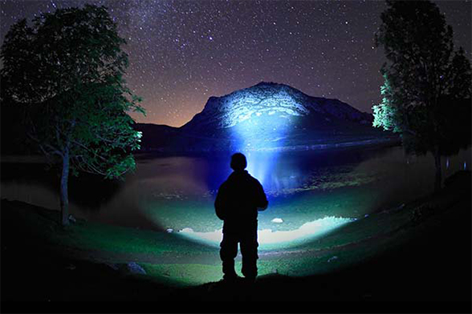

With A Rise In Domestic Terrorism, American's Are Turning To A Better Solution To Protect Themselves
 With the rise of domestic terrorism and stricter gun laws to contend with, American's are searching for better ways to protect themselves and their families against crime.
The solution? Tactical flashlights. These are becoming such popular self-defense tools in the wake of recent terror events that some companies like Primitive Survivor XT808 Tactical Flashlights can't keep up with demand.
"We had to open up a second factory just to keep up with the massive amounts of orders coming in."
The Primitive Survivor XT808 Tactical Flashlight is currently the most popular tactical flashlight of choice for most American's due to it's powerfully disorienting "strobe mode" that allows the user to flash a blinding strobe light into the attackers eyes, leaving them "disoriented beyond belief."
How effective are tactical flashlights, really?
If you've ever had someone take a picture of you at night with the flash on, you'll know how it takes a minute or two for your eyes to re-adjust. Now imagine that flash is 100x brighter and is strobing directly into your eyes. You wouldn't be able to see a thing, and would most likely lose your sense of balance.That's what you get with a tactical flashlight like the Primitive Survivor XT808 Tactical Flashlight. The strobe feature is designed to ruin an attacker's eye sight, so they can't see what they're doing, letting you safely run away- or if need be, gain the advantage and attack them.
The truth is, most people underestimate the importance of owning a tactical flashlight. Whether you're walking alone at night, driving somewhere and break down, or just want a light bright enough to deter animals while you're camping, tactical flashlights are so bright they give you the advantage.
Not to mention if you're in an emergency situation, what better way to call attention to yourself than with a powerful light that can be seen for up to 2 miles away!
Tactical flashlights like the Primitive Survivor XT808 Tactical Flashlight are used by the U.S. Navy Seals, the Coast Guard, Firemen, Policemen, U.S. Search and Rescue and now American citizens.
"In times like these, it's more important than ever for Americans to be prepared for anything, and this flashlight is one of the best pieces of gear to have as it can be used in almost every situation, from self defense to finding your dog at night..." -Matt B.